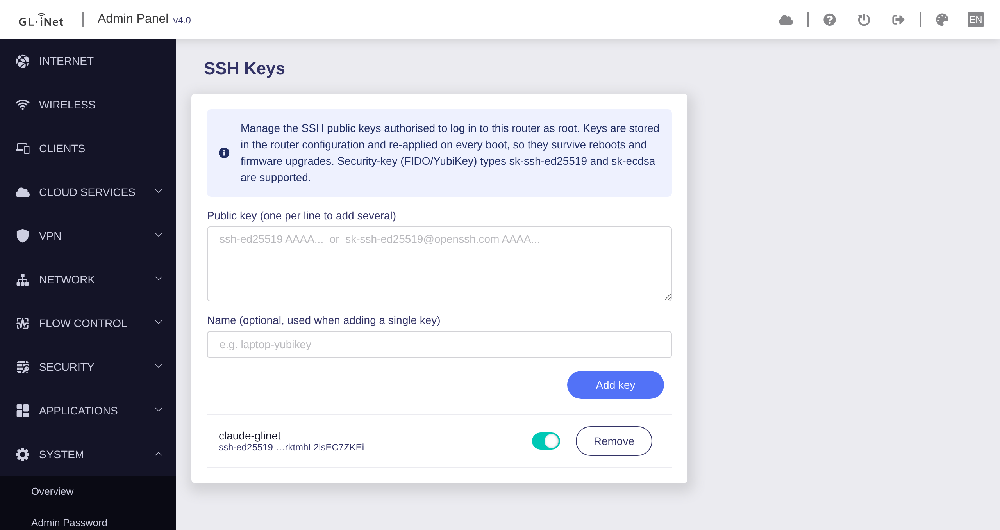

Add and remove the SSH public keys that may log in to a GL.iNet router, from the router's own admin panel. Keys survive reboots and firmware upgrades.

Feed URL (one feed serves every device):
https://digitalcybersoft.github.io/glinet-sshkeymanagement
Run the installer:
curl -fsSL https://digitalcybersoft.github.io/glinet-sshkeymanagement/setup.sh -o /tmp/setup.sh sh /tmp/setup.sh
Or add the feed manually:
echo 'src/gz glsshkeys https://digitalcybersoft.github.io/glinet-sshkeymanagement' >> /etc/opkg/customfeeds.conf opkg update --force-signature opkg install --force-signature gl-sdk4-sshkeys gl-sdk4-ui-sshkeysview
Then open System → SSH Keys. The feed is unsigned, so
--force-signature is required on both opkg commands. Both packages
are Architecture: all, so one feed serves every device.